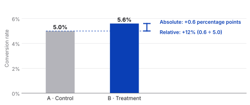
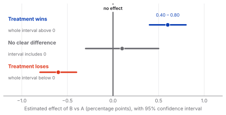

Inference & experiments
A/B Testing
A/B testing is a controlled experiment that compares two versions of a website, app, or marketing message, differing in one specific change, to determine which performs better. By randomly assigning users to a control group (A) or a treatment group (B), businesses can measure the impact of that change.
Instead of relying on intuition, teams use A/B testing to make evidence-based decisions about website design, marketing campaigns, and customer experiences. Performance is evaluated using metrics such as conversion rate, click-through rate, and average revenue per user. Statistical analysis helps determine whether an observed difference reflects a genuine effect or could be explained by random variation.
Contents
- Why do we need A/B testing?
- Designing an A/B test
- Analyzing A/B test results
- From statistical results to business decisions
Why do we need A/B testing?
An observed improvement doesn't necessarily mean a change caused it.
Imagine an online shop changes its checkout button to green. The following week, its conversion rate rises from 5.0% to 5.6%. The new button looks like a success—but what if the increase was caused by a seasonal promotion or simply random variation?
This is the challenge of measuring the impact of a change. Two problems can make the results misleading:
- Confounding variables. Other factors, such as a promotion or holiday, may influence conversion rates at the same time as the design change. Comparing results from different periods makes it difficult to separate their effects.
- Selection bias. If users can choose which version they see, those who select the new button might already be more likely to buy. The groups would differ before the experiment even begins.
A/B testing addresses these problems by randomly assigning eligible users to two versions and running them simultaneously. This makes the groups more comparable and helps isolate the effect of the change.
Statistical inference then helps us evaluate the evidence: Is the observed difference consistent with random variation, or does it provide evidence that the new version performs differently?
Together, controlled experimentation and statistical inference help businesses make decisions based on evidence rather than assumptions.
Designing an A/B test
This is a common interview question. A clean answer walks through five steps: define the variables, formulate the hypothesis, choose metrics, design the experiment and assign users, and determine the sample size and test duration. The running example is the checkout button test from the previous section. Analyzing the results comes afterwards, once the data have been collected.
Step 1: Define your variables
Start by naming the cause you want to test and the effect you want to measure. This keeps the experiment focused on one relationship. In our example, an online shop wants to know whether a redesigned checkout button leads to more purchases.
- Independent variable. The cause, the thing you deliberately change. It is not influenced by anything else in the experiment. Here: the design of the checkout button.
- Dependent variable. The effect, the outcome you measure. Its value is expected to change because of the independent variable. Here: the conversion rate, meaning the share of visitors who complete a purchase.
The two versions are the control (A), the existing button, and the treatment (B), the redesigned button. Everything else stays the same, so any difference in conversion can be traced back to the button.
A more complex test might compare several versions of the feature, or several settings of the same feature. The logic stays the same: you change the independent variable and watch what happens to the dependent variable.
Step 2: Formulate your hypothesis
A good experiment starts with a clear, testable hypothesis: a statement that connects the change to an expected outcome. A strong hypothesis has three parts:
- The change. What are you introducing? Here: a redesigned checkout button.
- The expected impact. What do you think will happen? Here: more visitors complete their purchase.
- The metric. How will you measure it? Here: the conversion rate.
For the statistical test later on, the hypothesis is written as a pair of competing statements:
- Null hypothesis (H0). The change has no effect. The conversion rates of the two buttons are equal.
- Alternative hypothesis (Ha). The change has an effect. The conversion rates of the two buttons are different.
The test then asks whether the data give enough evidence to reject the null hypothesis. Even if B looks better, this does not prove the alternative hypothesis: the test only shows whether the observed difference would be surprising if there were no real difference.
Step 3: Choose metrics
The goal is not simply to track activity, but to measure whether the change achieves its intended objective without negatively affecting other important outcomes.
- Primary metric. The main measure used to evaluate the hypothesis. Choose one primary metric before the experiment begins. For example, if the hypothesis is that a redesigned checkout increases purchases, the primary metric could be the conversion rate.
- Supporting metrics. Provide additional context and help explain the results. For example, average order value can reveal whether customers spend more per order, while session duration may offer insights into changes in user behavior.
- Guardrail metrics. Monitor potential negative side effects. For example, a redesigned checkout might increase conversion while also increasing the payment error rate or reducing average order value.

Choose the primary metric before running the experiment. If you examine many metrics and select whichever one looks best afterward, you increase the risk of finding an apparently positive result by chance. Defining the primary metric in advance helps prevent this problem.
Before running an A/B test, ask
- What decision am I trying to make?
- What user behavior represents success?
- Can I measure it reliably?
- Is the expected effect large enough to matter?
- Are there guardrail metrics to ensure I'm not causing unintended harm?
Step 4: Design the experiment and assign users
An A/B test is a controlled experiment. The treatment is the change being tested, and eligible users are split into two groups:
- Control group continues with the existing experience (the existing checkout button).
- Treatment group sees the change (the redesigned checkout button).
The difference in the metric between the two groups is the measured effect of the treatment. For example, if 5.6% of the treatment group and 5.0% of the control group complete a purchase, the new button added 0.6 percentage points. This only works if exposure to the button is the only meaningful difference between the groups. If the treatment group happened to contain mostly repeat buyers, you could not tell whether the button or the user mix caused the gap.

Who is eligible? Before assigning users to a group, define who should be included in the experiment. Include only users who could realistically be affected by the change. For a checkout experiment, this might mean users who reach the checkout page, rather than all visitors to the website.
Define the eligibility criteria before the experiment starts and apply them consistently to both groups. Otherwise, differences in who enters each group could distort the results and make it harder to isolate the effect of the redesigned button.
Key principle: randomization
Randomization is important because it:
- Creates comparable groups, so the only systematic difference is the tested change.
- Reduces selection bias by giving each participant an equal chance of being assigned to either group.
- Balances known and unknown factors (such as age, device, or user behavior) across groups on average.
- Supports causal conclusions, allowing you to attribute differences in outcomes to the treatment rather than other variables.
- Makes statistical tests valid, since most inferential methods assume random assignment.
Why it matters
Without randomization, it's difficult to know whether the change caused the result or whether some other factor did. Such a factor is called a confounder, and confounders can lead to incorrect conclusions about cause and effect.

Two ways to randomize
- Completely randomized design. Every user is assigned to control or treatment by a random process, for example a random number generated for each user ID. It is simple and works well when the sample is large.
- Randomized block design. You first sort users into blocks of similar users, then randomize within each block. It is used to handle known nuisance factors.
A nuisance factor is something that affects the outcome but is not what you are testing. Suppose mobile visitors convert much less often than desktop visitors. With a small sample, pure randomization could by chance put more desktop visitors in one group and distort the comparison. To prevent this, block by device: split visitors into mobile and desktop, then randomize within each block. If a difference appears inside a block, you can be more confident that the button caused it and not the device.
What could go wrong?
Even a well-designed split can fail in practice. Watch for:
- Unequal exposure. One group sees the button more often than the other, for example because of a technical bug. The difference in exposure could be mistaken for an effect of the design.
- Missing data. If purchases are not recorded for part of one group, the comparison is distorted.
- Users who saw both versions. If the same person sees A on one device and B on another, the groups are no longer separate.
- Interference between users. One user's treatment can influence another user's behavior.
Pro tip
In interviews, clearly explain which group is the control and which is the treatment, how users are assigned, and what you are comparing. Also consider network effects, where one user's treatment can influence another user's behavior. For example, assigning interacting friends to different groups may introduce interference. In such cases, randomizing groups of related users together may be more appropriate.
Step 5: Determine sample size and test duration
A test needs enough users to detect a meaningful effect. The required sample size depends on four factors:
- Significance level (α). The probability of a Type I error: concluding that a difference exists when the null hypothesis is true. It is commonly set at 5%.
- Statistical power. The probability of detecting a specified effect when it truly exists. It is commonly set at 80%, corresponding to a 20% risk of missing that effect (a Type II error). This is a convention that balances reliability against cost: higher power requires more users, so 80% is often chosen unless missing a real effect would be especially costly.
- Minimum detectable effect (MDE). The smallest improvement the experiment is designed to detect. Smaller effects generally require larger samples.
- Baseline and variability. The expected starting value of the metric and how much it varies. For conversion rates, the baseline conversion rate affects the required sample size. For continuous metrics, greater variability generally requires more users.
For example, with a baseline conversion rate of 5.0%, an MDE of 0.6 percentage points (5.0% → 5.6%), a significance level of 5%, and 80% power, you need approximately 22,000 users per group. If you want to detect a larger improvement of 1 percentage point (5.0% → 6.0%), approximately 8,000 users per group may be sufficient.
Duration depends on the required sample size and the time needed to capture representative user behavior. Estimate it in advance, taking into account traffic, purchase cycles, and weekly patterns. Run the experiment until the planned sample size and minimum duration are reached. Avoid stopping early simply because the results look promising: repeatedly checking results and stopping as soon as they become significant can increase the false-positive rate unless an appropriate sequential testing method is used.
With the sample size, the duration and the stopping rule fixed in advance, the experiment is fully planned. The next section looks at what happens once the data have been collected.
Analyzing A/B test results
The question to ask: "Did B perform better because of our change, is the improvement large enough to matter, and did it avoid causing other problems?"
| # | Check | What to do |
|---|---|---|
| 1 | Experiment validity | Make sure the experiment was conducted correctly. Check randomization, and look for problems such as missing data, users who saw both versions, or unequal exposure. |
| 2 | Effect size | Calculate the key metrics and the effect, as an absolute and a relative improvement (see below). |
| 3 | Statistical significance | Ask whether this difference could have happened by random chance, using the p-value. |
| 4 | Confidence interval | Look at the range of plausible effects. |
| 5 | Supporting and guardrail metrics | The change may not be a success if it created other problems. |
| 6 | Segments | Check important user groups carefully to see whether the new design helps some users but harms others. |
| 7 | Decision | Treatment wins, no clear difference, or treatment loses. |
Check validity first
Before looking at any results, verify that the experiment ran as planned: the split matches the intended allocation, there is no missing data, and no users saw both versions. If the experiment was not run correctly, the results cannot be trusted.
Measure the observed effect
Now suppose the experiment has run until both groups reached the planned sample size of 22,000 users. The results are:
| Metric | Control (A) | Treatment (B) |
|---|---|---|
| Users | 22,000 | 22,000 |
| Conversions | 1,100 | 1,232 |
| Conversion rate | 5.0% | 5.6% |
The treatment group has a conversion rate 0.6 percentage points higher than the control group. But is this difference statistically significant, or could it be explained by random variation?
The estimated effect can be expressed in two ways:
- Absolute improvement. The difference between the groups, here +0.6 percentage points.
- Relative improvement. The percentage increase compared with the original, here +12%.
Absolute difference = 5.6% − 5.0% = +0.6 percentage points
Relative improvement = 5.6% − 5.0%5.0% = +12%
Both matter: the absolute difference shows the change in percentage points, while the relative improvement shows how large that change is compared with the original conversion rate.

Statistical significance and the p-value
If there were actually no difference between A and B, how likely is it to observe a difference this large? If that is unlikely (commonly p < 0.05), the difference is considered statistically significant.
In our example, a two-sided z-test for two proportions gives p ≈ 0.005, well below the 5% threshold. We therefore reject the null hypothesis that the two conversion rates are equal. If the p-value had been above 0.05, we would fail to reject it, which is not the same as proving that the button has no effect.
Be careful with interpretation: the p-value is not the probability that the result occurred by chance, and it is not the probability that the null hypothesis is true.
Confidence intervals
A confidence interval shows the range of plausible effects. It tells us, for example: based on this experiment, the true improvement is plausibly between 0.40% and 0.80%.

Calculating the 95% confidence interval
For two independent conversion rates, an approximate 95% confidence interval for the difference is:
Confidence interval = (p̂B − p̂A) ± 1.96 × SE
Where the standard error (SE) is:
SE = √( p̂A(1 − p̂A)nA + p̂B(1 − p̂B)nB )
Here, p̂A and p̂B are the observed conversion rates, while nA and nB are the sample sizes.
Substituting the values gives:
- Estimated difference: 0.006
- Standard error: approximately 0.00215
- Margin of error: 1.96 × 0.00215 ≈ 0.0042
Therefore, the 95% confidence interval is approximately:
0.006 ± 0.0042 = [0.0018, 0.0102]
Expressed in percentage points, the interval ranges from +0.18 to +1.02 percentage points.
The same calculation in Python:
import numpy as np
from scipy import stats
# Data from the example
n_a, n_b = 22_000, 22_000
x_a, x_b = 1_100, 1_232 # conversions
# Conversion rates
p_a = x_a / n_a # 0.05
p_b = x_b / n_b # 0.056
# Step 1: difference
diff = p_b - p_a # 0.006
# Step 2: standard error and 95% confidence interval
se = np.sqrt(p_a * (1 - p_a) / n_a + p_b * (1 - p_b) / n_b)
z = stats.norm.ppf(0.975) # 1.96
margin = z * se
low, high = diff - margin, diff + margin
print(f"Difference: {diff:.4f}")
print(f"Standard error: {se:.5f}")
print(f"Margin of error: {margin:.4f}")
print(f"95% CI: [{low:.4f}, {high:.4f}]")Difference: 0.0060
Standard error: 0.00214
Margin of error: 0.0042
95% CI: [0.0018, 0.0102]Interpreting the confidence interval
The entire confidence interval lies above zero, indicating that the treatment group's conversion rate is statistically significantly higher at the 5% significance level, using the corresponding two-sided test.
The interval also communicates uncertainty: although the observed improvement is 0.6 percentage points, the data are compatible with a range of positive effects.
From statistical results to business decisions
Statistical analysis is not the final objective. The business needs to decide what to do.
Is the improvement meaningful?
Statistical significance does not automatically mean business success. An increase of 0.6 percentage points means about 6 additional purchases per 1,000 checkout visitors. Whether that is worth it depends on the business. The team should consider:
- Additional purchases. How many extra conversions the change generates.
- Revenue and profit. What those purchases are worth.
- Costs. Implementation and maintenance of the new design.
- Persistence. Whether the improvement lasts after rollout.
Check the guardrail metrics
Return to the metrics chosen in Step 3. The redesigned button might increase conversion while also increasing the payment error rate or reducing the average order value. A successful experiment meets its primary objective without unacceptable negative side effects.
Make the decision
In our example, the results support rolling out the redesigned button, provided the improvement is commercially worthwhile and no guardrail metrics show unacceptable harm. In general, there are three possible outcomes:
| Result | Possible decision |
|---|---|
| Positive effect, sufficiently valuable, guardrails acceptable | Roll out the change |
| Inconclusive result | Gather more evidence or reconsider the experiment |
| Negative effect or unacceptable harm | Reject or redesign the change |
An inconclusive result does not automatically mean the experiment should be extended. If the planned sample size has already been reached, additional data should only be collected under a new, prespecified analysis plan.
Key takeaways
- Randomize. Random assignment helps make the groups comparable, allowing you to estimate the effect of a change while reducing confounding.
- Define success before you start. Choose one primary metric, add supporting metrics for context, and use guardrail metrics to detect unintended harm.
- Plan the experiment in advance. Determine the required sample size, statistical power, and test duration before collecting data. Avoid stopping early simply because the results look promising.
- Check validity first. Verify the randomization, missing data, and unequal exposure before interpreting the results.
- Look beyond the p-value. Report the absolute and relative effect sizes, and use confidence intervals to understand the uncertainty around the estimated effect.
- Consider the whole picture. Statistical significance does not guarantee business value. Guardrail metrics, customer segments, implementation costs, and practical significance all matter when deciding whether to roll out a change.